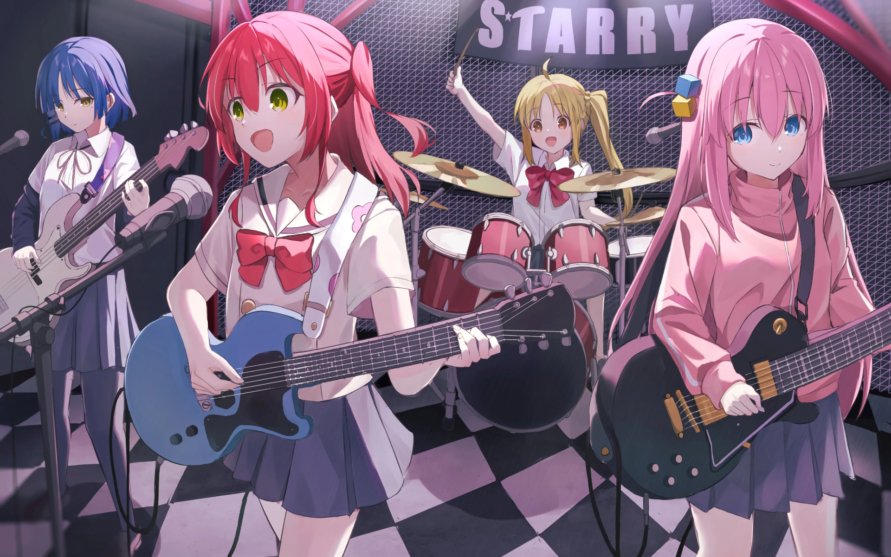

About Bocchi
Hitori Gotoh, also known as Bocchi is one of the main characters in the anime series, Bocchi the Rock! Bocchi is an extremely timid and introverted first-year student in high school.
Kessoku Band
Bocchi's Characteristics
- She is an introverted student
- She is very good at playing guitar
- She joined a band called "Kessoku Band" alongside her new friends
Bocchi's friends
Though Bocchi is an introvert, she has a few friends she enjoy hanging out with and those friends are the one in the band together with her. Click on the links to read more about them